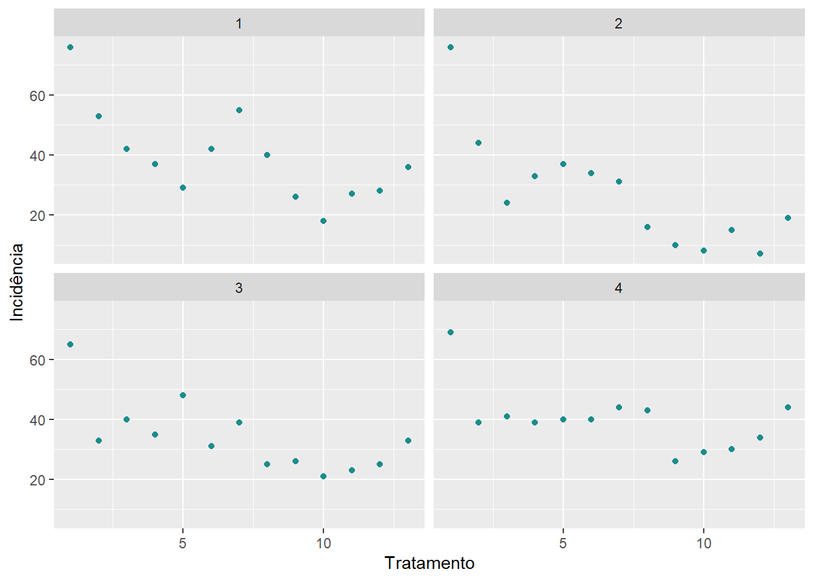
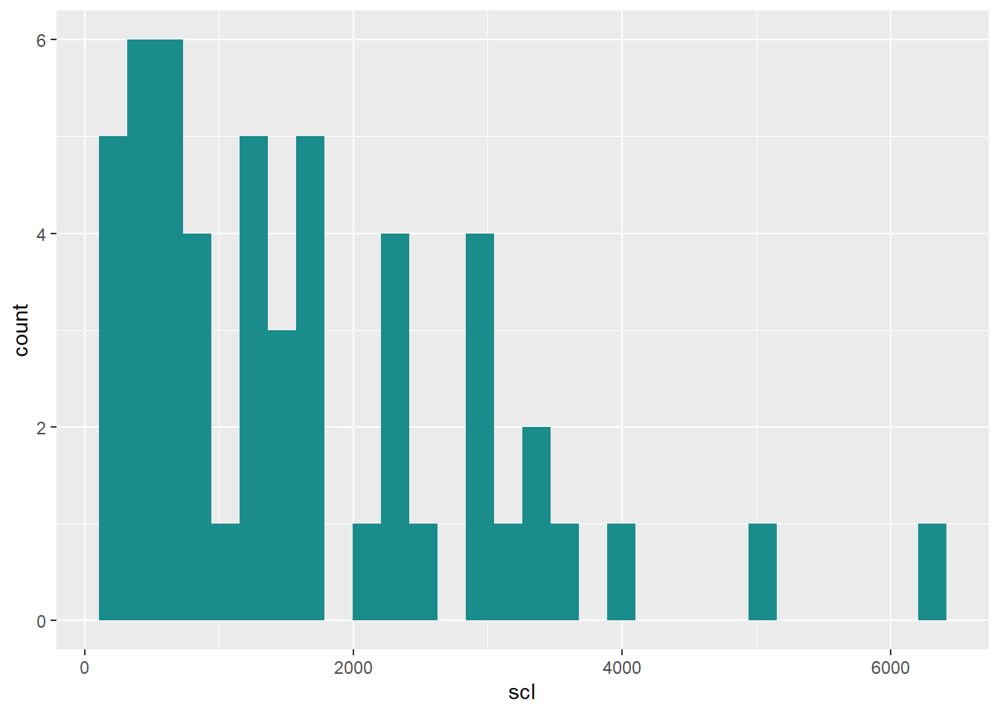
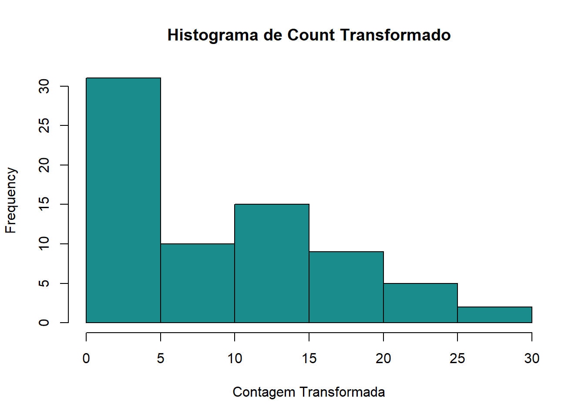

Transformação de dados no R Studio
Antes de iniciar uma análise estatística no R, pode ser necessário transformar os dados, dependendo de suas características e das exigências do método analítico escolhido. Essas transformações são úteis para adequar os dados aos pressupostos da análise estatística, como a normalidade da distribuição e a homogeneidade das variâncias.
Antes de realizar transformações, precisamos entender a natureza dos dados. Vamos trabalhar com o conjunto de dados mofo, presente na planilha dados-diversos.
Importando o conjunto de dados
Visualização dos dados
Code

Histograma para visualizar a incidência e outro para visualizar os dados de escleródio.
Code

Boxplot:
Para achar a média podemos usar as funções $, mean+conjunto ou summary.
[1] 2194 1663 1313 1177 753 1343 1519 516 643 400 643 921 1196 1331 756
[16] 338 581 588 231 925 119 394 206 275 131 588 5013 3619 2325 2588
[31] 3969 1556 3175 1763 2894 350 419 644 2850 6216 2888 2272 2868 2412 2372
[46] 3424 1744 1456 1732 1080 1592 3268[1] 1639.096Os dados podem ser transformados de diferentes formas, sendo as mais comuns log e raiz quadrada.
Transformação logarítmica
A transformação logarítmica é uma técnica comum utilizada na análise de dados para lidar com variáveis que apresentam distribuição assimétrica ou variância heterogênea. Ela pode ajudar a estabilizar a variância, aproximar os dados de uma distribuição normal e melhorar a interpretação dos resultados estatísticos.
No RStudio, a transformação logarítmica pode ser aplicada facilmente com funções como log(), log10() (logaritmo na base 10) ou log2() (logaritmo na base 2), dependendo do contexto da análise. Podemos realizar essa transformação com o uso da função mutate. Através da função mutate() realizamos a criação/adição de uma nova variável (ou novas variaveis), que são funções de variáveis existentes, e também criamos/modificamos colunas.
# A tibble: 52 × 6
study treat inc scl yld scl2
<dbl> <dbl> <dbl> <dbl> <dbl> <dbl>
1 1 1 76 2194 2265 7.69
2 1 2 53 1663 2618 7.42
3 1 3 42 1313 2554 7.18
4 1 4 37 1177 2632 7.07
5 1 5 29 753 2820 6.62
6 1 6 42 1343 2799 7.20
7 1 7 55 1519 2503 7.33
8 1 8 40 516 2967 6.25
9 1 9 26 643 2965 6.47
10 1 10 18 400 3088 5.99
# ℹ 42 more rowsVisualizar os dados tranformados
Histograma
Transformação em raiz quadrada
A transformação em raiz quadrada é uma técnica estatística utilizada para corrigir assimetrias nos dados e estabilizar a variância, especialmente quando os dados representam contagens ou variáveis discretas com distribuição assimétrica.
Esse tipo de transformação é útil quando os dados apresentam variância crescente com a média, o que viola pressupostos importantes de muitos testes estatísticos, como a ANOVA e o teste t.
No RStudio, a transformação em raiz quadrada pode ser feita com a função sqrt():
# A tibble: 52 × 6
study treat inc scl yld scl2
<dbl> <dbl> <dbl> <dbl> <dbl> <dbl>
1 1 1 76 2194 2265 46.8
2 1 2 53 1663 2618 40.8
3 1 3 42 1313 2554 36.2
4 1 4 37 1177 2632 34.3
5 1 5 29 753 2820 27.4
6 1 6 42 1343 2799 36.6
7 1 7 55 1519 2503 39.0
8 1 8 40 516 2967 22.7
9 1 9 26 643 2965 25.4
10 1 10 18 400 3088 20
# ℹ 42 more rowsVisualizar os dados tranformados
Histograma
Transformação de dados Box-Cox
A transformação de Box-Cox é uma técnica estatística utilizada para estabilizar a variância e aproximar os dados de uma distribuição normal. Diferente de outras transformações fixas, como log ou raiz quadrada, a Box-Cox aplica uma família de transformações parametrizadas, permitindo encontrar automaticamente o melhor ajuste aos pressupostos dos modelos estatísticos.
Ela é especialmente útil quando não se sabe previamente qual transformação aplicar, pois estima um parâmetro lambda (λ) que define a forma ideal da transformação.
A transformação de Box-Cox é definida pela seguinte equação: y(lambda) = (x^lambda - 1) / lambda
Nessa equação, “x” representa a variável original, “y(lambda)” representa a variável transformada para um determinado valor de lambda e “lambda” é o parâmetro de transformação que varia de -∞ a +∞. O valor de lambda determina o tipo de transformação aplicada: Se lambda = 0, a transformação de Box-Cox é equivalente ao logaritmo natural (ln). Se lambda = 1, a transformação de Box-Cox é equivalente à transformação linear (sem transformação). Se lambda < 0, é aplicada uma transformação inversa.
A transformação Box-Cox pode ser aplicada usando a função boxcox() do pacote MASS.
Exemplo: InsectSprays, do próprio R. A função boxcox() pode ser utilizada para calcular a transformação de Box-Cox e identificar o valor de lambda ótimo para uma determinada variável. Essa função retorna uma lista de resultados, incluindo o valor de lambda ótimo e gráficos de diagnóstico.
Importando dados
Code
